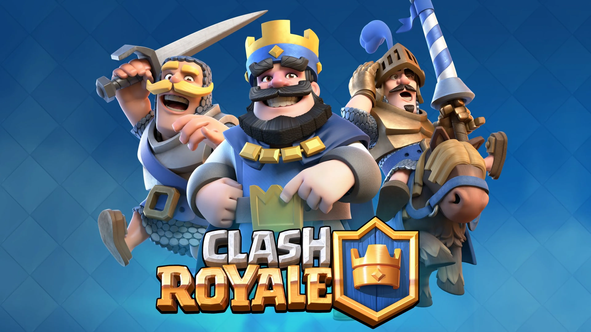
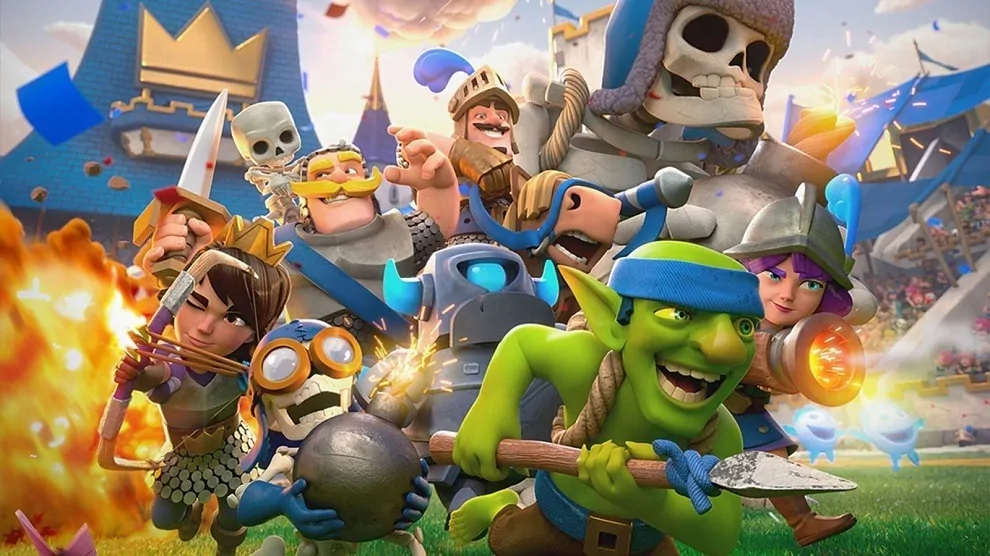

Bienvenido
¡Bienvenido a la Wiki Clash Royale en Español!, el sitio de la comunidad sobre el juego de Supercell.

¿Que es Clash Royale?
Clash Royale es un videojuego de estrategia en línea para dispositivos móviles, creado por la compañía finlandesa Supercell.Fue lanzado globalmente el 2 de marzo de 2016.Es un videojuego freemium de estrategia en tiempo real basado en los personajes de Clash of Clans. Combina elementos de los juegos de cartas coleccionables y defensa de torres. Combinando cartas para crear un mazo bélico que es necesario para ingresar a una partida y en esta combinar cartas de ataque y defensa, creando combos a favor del jugador para destruir las torres enemigas.
